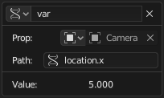
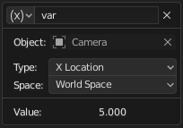

驱动器面板¶
编辑驱动器弹窗。¶
参考
- 编辑器
曲线编辑器
- 模式
驱动器面板
- 面板
- 快捷键
N
参考
- 面板
- 快捷键
Ctrl-D
这个面板在 驱动编辑器 右侧工具栏可见，或者给属性添加驱动器时弹出。
开头显示的是正被驱动的属性名称，然后是决定驱动器如何作用的一系列设置。
驱动器设置¶
类型¶
有两类驱动程序：
内置函数 (平均, 求和, 最小值 and 最大值)
驱动属性将获得被引用 驱动器变量 数值的平均值、总和、最低或最高值。如果只有一个驱动器变量，这些函数将产生相同的结果。
自定义 (脚本表达式).
利用 驱动器变量 的Python表达式，变量可以来自的物体属性。详见 表达式.
驱动器值¶
当前驱动器的计算结果。
更新依赖¶
强制更新驱动器值相关性。
驱动变量¶
变量可以是物体单个属性、变换通道(位置缩放等信息)、两个物体的旋转角度差值、两个物体的距离。
驱动器通过 驱动器变量 访问物体数据，而不是以Python表达式形式引用，以便正确跟踪依赖项。
添加、复制、粘贴按钮。¶
- 添加变量
添加新的驱动变量。
- 复制/粘贴变量
复制当前的变量列表，供粘贴到其他驱动器的变量列表中。

单个属性。¶ |

变换通道。¶ |
距离。¶ |
- 名称
用于脚本表达式的变量名。必须以字母开头，仅允许包含字母、数字或者下划线。
- 变量类型
使用的变量类型。
- 单个属性
检索由数据块引用和路径字符串指定的 RNA 属性的值。
在变换属性的情况下，这将返回 UI 属性的确切值，而变换通道将根据需要考虑父项和/或约束。
另见 自定义属性.
- ID类型
标识类型。例如：关键帧，图像，物体，材质。
- ID
数据块的ID，如: "Material.001"。
- RNA路径
属性的 RNA 名称，基于 Python 属性访问语法的子集。比如，
location.x或location[0]表示X向位置坐标值，或者["prop_name"]访问自定义属性。
- 形变通道
使用物体或骨骼的某一变换通道。
- 旋转差值
使用两个物体或骨骼的旋转差值。
- 距离
使用两个物体或骨骼之间的距离。
- 值
显示变量数值。
旋转通道模式¶
旋转变换通道支持多种操作模式，包括：
- 自动欧拉
使用目标 欧拉 顺序将旋转分解为通道。
- XYZ 欧拉， ...
明确指定使用的 欧拉 旋转顺序。
- 四元数
提供旋转的 四元数 表示。
- 摆动和 X/Y/Z 扭曲
将旋转分解为两个部分：一个 摆动 旋转，该旋转以指定轴为最终方向，后跟一个 扭曲 围绕该轴旋转。这通常是驱动纠正: 形态键 和骨骼有机关节旋转所必需的。
此分解通常是在绑定中生成的，使用带有 阻尼跟踪约束 的辅助骨骼来提取摆动部分，其子级用 复制变换 来提取扭曲分量。
摆动和 Y 扭曲 的通道值为:
加权角度的衰减曲线。¶
- Y 旋转
扭曲旋转的真实角度。
- W 旋转
摆动旋转的真实角度，与方向无关。
- X 旋转，Z 旋转
表示围绕 X/Z 轴的摆动量的加权角度。
当旋转仅围绕该轴时，角度的幅度等于 W 旋转，当方向向另一个轴移动时，随着右侧图形的衰减曲线，该角度将衰减为零。
在数学上，摆动角度是对 W 使用 \(2 \arccos(w)\) 对其他分量使用 \(2 \arcsin(x)\) 等从四元数分量计算出来的。与扭曲轴相对应的摆动旋转分量始终为 0，并替换为其扭曲角度。
表达式¶
- 表达式
一个文本框，可以在其中输入一个任意 Python 表达式，该表达式以名称引用 驱动器变量。
The expression has access to a set of standard constants and math functions from
math,bl_mathand other modules, provided in the Driver Namespace. For an example of adding a custom function to the namespace, see the driver namespace example.为了优化性能，最好尽可能使用 简单表达式。
- 使用自身
使用
self变量引用自身数据。用于物体、骨骼，避免创建指向自身属性的变量。举例:
self.location.x可用于同一对象的Y旋转属性，使对象在移动时旋转。请注意，可能无法完全跟踪通过
self访问的属性的依赖项。
简单表达式¶
Blender可以直接使用Python的函数表达方法，显著提高性能，尤其是在多个系统中。要利用此功能，驱动程序的表达式必须且仅使用以下功能：
- 变量名称
仅使用ASCII字符。
- 常量
浮点和十进制整数。
- 全局变量
frame- 常量
pi,True,False- 运算符号
+,-,*,/,==,!=,<,<=,>,>=,and,or,not, conditional operator/ ternary if- Standard Functions
min,max,radians,degrees,abs,fabs,floor,ceil,trunc,round,int,sin,cos,tan,asin,acos,atan,atan2,exp,log,sqrt,pow,fmod- Blender Provided Functions
lerp,clamp,smoothstep
即使禁用Python脚本执行，也会计算简单表达式。
当使用此子集外部的表达式时，Blender 将显示"慢速 Python 表达式"警告。但是，只要大多数驱动器使用的是简单的表达式，有选择地使用几个复杂表达式是可行的。
See also